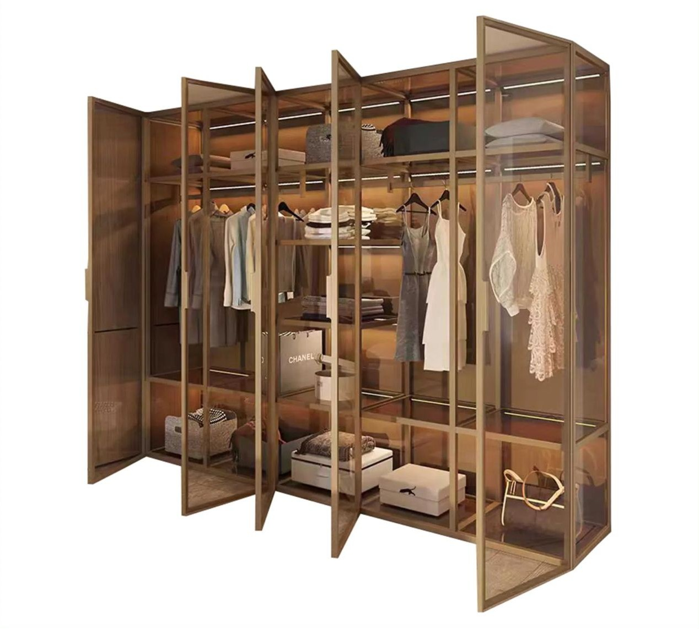

Motorized aluminium-framed doors that open and close automatically via sensors, providing hands-free access, enhanced convenience, and improved energy efficiency for modern buildings.
AUTOMATIC

Sliding doors
Aluminium automatic sliding doors are motorized doors with aluminium frames that slide horizontally to open and close automatically, triggered by sensors for convenient, hands-free access, commonly found in commercial and public buildings.
Glass Options:
- Single Glazed (Toughened/Tempered)
- Laminated
- Frosted
- Performance

Swing doors
Aluminium automatic swing doors are motorized doors with aluminium frames that open and close automatically by pivoting on hinges, typically activated by sensors for hands-free entry and exit, often seen in commercial and accessible environments.
Glass Options:
- Single Glazed (Toughened/Tempered)
- Frosted
- Laminated
- Performance
Curved sliding doors
Aluminium automatic curved sliding doors are motorized, sensor-activated doors with aluminium frames and curved glass panels, offering a highly aesthetic and welcoming entrance that moves along a curved track, ideal for architectural statements and optimizing space.
Glass Options:
- Single Glazed (Toughened/Tempered)
- Frosted

Revolving doors
Aluminium automatic revolving doors are motorized, multi-wing doors with aluminium frames that continuously rotate, providing a sophisticated, hands-free entrance that significantly reduces air exchange, enhances energy efficiency, and improves security in high-traffic buildings.
Glass Options:
- Single Glazed (Toughened/Tempered)
- Frosted
TECHNICAL ADVANTAGES
Smart Sensor Technology
Advanced motion detection with adjustable sensitivity for all lighting conditions
Fail-Safe Operation
Battery backup and manual override for uninterrupted access
Energy Efficient
Reduces HVAC loss by up to 70% compared to standard doors
ADA Compliant
Meets all accessibility standards with adjustable opening speeds
PROJECT SHOWCASE


